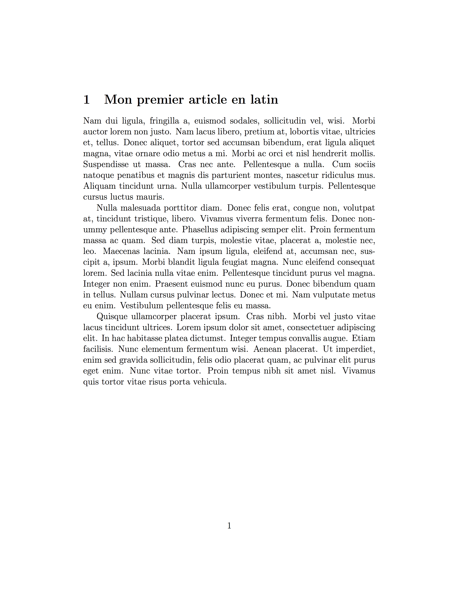
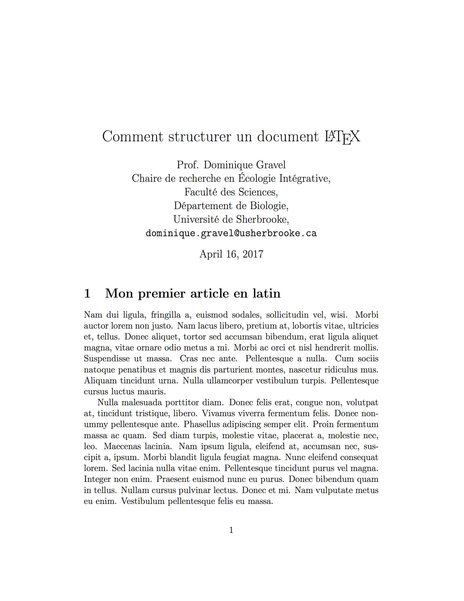
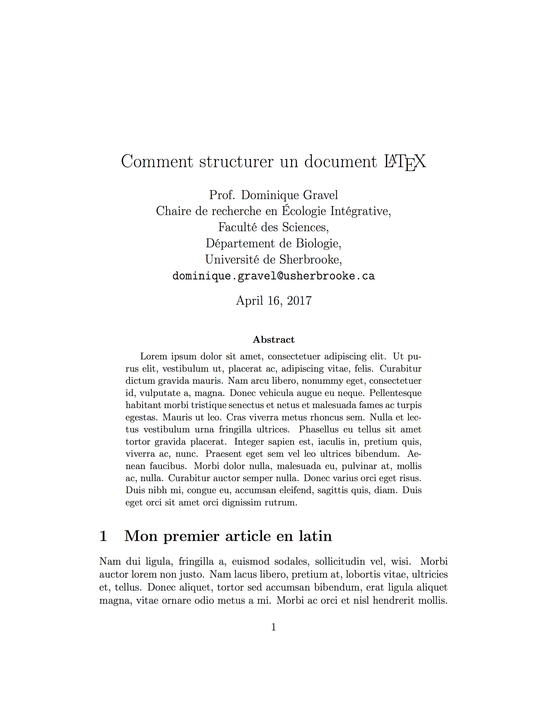

- Ces diapositives sont disponibles en version web et en PDF.
- L'ensemble du matériel de cours est disponible sur la page du portail moodle.
Séance 6: Documents dynamiques avec LaTeX
BIO 500 - Méthodes en écologie computationnelle
Dominique Gravel & Steve Vissault
Laboratoire d'écologie intégrative
Séance 6
Introduction
Où sommes-nous?

Pourquoi \(\LaTeX\)?

Qu'est ce que \(\LaTeX\)?
- Language introduit en 1983 par l'informaticien Leslie Lamport.
- C'est un language à balise.
- Concu spécifiquement pour l'écriture de rapports scientifiques.
- L'utilisation de \(\LaTeX\) est une norme chez les mathématiciens et les physiciens.
Avantages de \(\LaTeX\)?
- Qualité de la mise en page
- Mise en page automatique
- Table des matières
- Gestion des références
- Performance pour l'intégration de matériel (e.g. figures, tableaux)
- Stabilité
- Inter-opérabilité
- Reproductibilité (tout est scripté)
La structure d'un document \(\LaTeX\)
\documentclass[12pt]{article}
\usepackage[T1]{fontenc}
\usepackage[utf8]{inputenc}
\title{Un document minimalist}
\author{Dominique Gravel}
\begin{document}
Je peux écrire du texte ici.
\end{document}
\documentclassdétermine la classe du document.\usepackage: Comme R, \(\LaTeX\) permet l'utilisation de librairies.inputecetfontecsont des libraries permettant de gérer l'encoding du document (caractères avec accent etc.). Les[]déterminent les options.- On ouvre l'environnement
Documentavec\begin
Séparer le contenu du contenant
- La mise en page est gérée par des balises et environnements.
- Les balises et environnements déclarent le contenant (la forme)
- Le texte se place entre les balises (le contenu)
- Si l'on change tout simplement de balises \(\LaTeX\), on obtient une nouvelle mise en forme.
Un exemple d'efficacité
\documentclass[12pt]{article}
\usepackage[utf8]{inputenc}
\usepackage{color,dcolumn,graphicx,hyperref}
\usepackage{wrapfig}
\begin{document}
\title{How likely is speciation in neutral ecology ?}
\author{Philippe Desjardins-Proulx, Dominique Gravel}
\maketitle
%=====================
\section{Introduction}

Un exemple d'efficacité
\documentclass[letterpaper,twocolumn,showkeys]{revtex4-1}
\usepackage[utf8]{inputenc}
\usepackage{color,dcolumn,graphicx,hyperref}
\usepackage{wrapfig}
\begin{document}
\title{How likely is speciation in neutral ecology ?}
\author{Philippe Desjardins-Proulx, Dominique Gravel}
\maketitle
%=====================
\section{Introduction}

Autres avantages
- \(\LaTeX\) est un language gratuit et OpenSource.
- Stable et doté d'une riche communauté d'utilisateur.
- Stack Overflow entièrement dédié à \(\LaTeX\): https://tex.stackexchange.com/
- Ajustement automatique du contenant au contenu
- Comme R, \(\LaTeX\) dispose de plusieurs libraries (packages) pour satisfaire nos besoins.
Désavantages
- La courbe d'apprentissage peut être plus rude.
- La compilation requière plusieurs étapes
- Les erreurs de compilation sont souvent difficiles à comprendre.
- Son principal point faible réside dans l'absence d'un système de révision multi-utilisateurs.
Faire du \(\LaTeX\) avec Sublime Text2
- Créer un dossier sur votre bureau qui va contenir votre document \(\LaTeX\)
- Ouvrir Sublime Text2
- Sélectionner votre dossier nouvelle créer:
Fichier > Ouvrir - Créer un nouveau document:
Fichier > Nouveau - Enregistrer votre document avec l'extension
.tex:Fichier > Enregistrer sous
Et voilà, l'extension .tex détermine que le fichier est un document \(\LaTeX\).
Mon premier document \(\LaTeX\)
Mon premier document \(\LaTeX\)
\documentclass[12pt]{article}
\usepackage[T1]{fontenc}
\usepackage[utf8]{inputenc}
\usepackage{lipsum}
\begin{document}
\section{Mon premier article en latin}
% Ceci est un commentaire
\lipsum[2-4]
\end{document}
Exercice 1 (10 minutes):
Recopier dans Sublime Text 2 ce code .tex.
Note: \usepackage{lipsum} est un package permettant de générer du faux texte (latin de mise en forme).
La compilation d'un document \(\LaTeX\) sans bibliographie
La compilation
Afin d'obtenir le rendu PDF de notre document, nous devons compiler ce dernier à l'aide du compilateur pdflatex.
Étape 1. Ouvrez votre terminal (touches Ctrl+Alt+t).
Étape 2. À l'aide de la commande
cd(Change Directory), vous devez vous déplacer dans le terminal vers le dossier que vous venez de créer:
cd ~/Bureau
cd /home/etudiant/Bureau
La compilation
- Étape 3. Vous pouvez maintenant compiler le document avec la commande:
pdflatex mon_document.tex
- Étape 4. Une fois la compilation terminée, les deux dernières lignes de la sortie devraient être:
Output written on doc.pdf (1 page, 31402 bytes).
Transcript written on doc.log.

Définir les métadonnées
\title{Comment structurer un document \LaTeX{}}
\author{Prof. Dominique Gravel\\
Chaire de recherche en Écologie Intégrative,\\
Faculté des Sciences,\\
Département de Biologie,\\
Université de Sherbrooke,\\
\texttt{dominique.gravel@usherbrooke.ca}}
\date{\today}
- On définit les métadonnées avec
\title,\author,\date. - Les métadonnées doivent être placées avant l'environnement
\begin{document}. - Les
\\dans la balise\authorpermettent une mise à la ligne. - Enfin, la balise
\todayremplie la date du jour pour nous.
Note : pour une date en français, il faut utiliser le package \usepackage[rench]{babel}
Créer la page titre à partir des métadonnées
La page titre est généré grâce à la balise \maketitle dans l'environnement document.
[...]
\begin{document}
\maketitle
[...]
\end{document}

Exercice 3
Ajoutez vos métadonnées puis compilez votre document avec la page titre.
Insérer un résumé
On écrit notre résumé entre dans l'environnement abstract.
[...]
\begin{document}
\maketitle
\begin{abstract}
\lipsum[1]
\end{abstract}
\section{Mon premier article en latin}
\lipsum[2-4]
\end{document}

Ajouter des sections
[...]
\begin{document}
\section{Ma première section}
\section{Ma seconde section}
\subsection{Une sous-section de la seconde section}
\subsubsection{Une sous-section de sous-section}
\section*{Une troisième section sans numéro}
\end{document}
- Nous n'avons pas besoin d'utiliser de
\beginou\end. - Une section est numérotée par défault.
- Pour éviter cette numérotation vous pouvez ajouter une
*avant les accolades.
Insérer la table des matières
[...]
\begin{document}
\maketitle
\tableofcontent
\section{Ma première section}
\section{Ma seconde section}
\subsection{Une sous-section de la seconde section}
\subsubsection{Une sous-section de sous-section}
\section*{Une troisième section sans numéro}
\end{document}
La simple déclaration de la balise \tableofcontent permet la création d'une table des matières.
Exercice 4
Ajoutez des sections à votre document, et construisez la table des matières.
Prenez le temps de lire la sortie affichée par le compilateur pdflatex.
Le fichier auxiliaire (.aux)
Lors du dernier exercice, vous avez remarqué que la table des matières n'était pas insérée dans le document.
La première compilation scanne le document à la recherche de références internes telles que les sections.
Écriture d'un fichier
mon_document.aux:\relax \@writefile{toc}{\contentsline {section}{\numberline {1}Mon premier article en latin}{1}}La deuxième compilation assemble l'ensemble du document à partir du fichier
mon_document.auxde la première compilation.
Il faut deux compilations successives pour obtenir la table des matières dans le document pdf.
Le fichier auxiliaire (.aux)

Mise en forme du document
Mise en forme du texte
Emphase sur le texte
[...]
\begin{document}
Voici un texte
\textit{en italique},
\textbf{en gras},
\textsc{avec des petites capitales},
\textsf{avec des caractères sans empattement},
\texttt{avec des caractères à chasse fixe},
avec des mots avec {\small{un corps plus petit}}
ou {\large{plus grand}}.
\end{document}

Votre meilleur professeur

Taille de la police de caractères
Corps très petit
\footnotesize texte très petit \normalsize, ou bien
\begin{footnotesize} texte très petit \end{footnotesize}
Corps petit
\small texte petit \normalsize, ou bien
\begin{small} texte petit \end{small}
Corps grand
\large texte grand \normalsize, ou bien
\begin{large} texte grand \end{large}
Corps très grand
\Large texte très grand \normalsize, ou bien
\begin{Large} texte très grand \end{Large}.
Alignement des paragraphes
- \textbf{...}
- \textit{...}
- \texttt{...}
- \underline{...}
- \emph{...}
Interligne
- \textbf{...}
- \textit{...}
- \texttt{...}
- \underline{...}
- \emph{...}
Séparateur entre paragraphes
- \textbf{...}
- \textit{...}
- \texttt{...}
- \underline{...}
- \emph{...}
Saut de page et saut de section
- \textbf{...}
- \textit{...}
- \texttt{...}
- \underline{...}
- \emph{...}
Référence interne au document
- URL
- Ancre de page
Personnalisation du document
\hypersetup{
backref=true, % Permet d ajouter des liens dans
pagebackref=true, % les bibliographies
hyperindex=true, % Ajoute des liens dans les index.
colorlinks=true, % Colorise les liens.
breaklinks=true, % Permet le retour à la ligne dans les liens trop longs.
urlcolor= blue, % Couleur des hyperliens.
linkcolor= blue, % Couleur des liens internes.
bookmarks=true, % Créé des signets pour Acrobat.
bookmarksopen=true, % Si les signets Acrobat sont créés,
% les afficher complètement.
pdftitle={Mon document au format TeX}, % Titre du document.
% Informations apparaissant dans
pdfauthor={PoluX}, % dans les informations du document
pdfsubject={Projet wikiBooks} % sous Acrobat.
}
Les principaux environnements \(\LaTeX\)
Ajouter une figure
\begin{figure}
\includegraphics[width=0.35\textwidth]{fig.eps}
\caption{The metacommunity as a graph of local communities. Each community is
connected by dispersal to one or more communities.}
\end{figure}
\begin{figure}ouvre l'environnement figure\includegraphicsspécifie la figure à ajouter et sa taille relative\captiondéfinie la légende de la figure\end{figure}ferme l'environnement figure
Ajouter une équation
Dans le texte
La théorie de la biogéographie des îles donne la richesse
en espèces $S$ à l'équilibre au point où les courbes
$I(S)$ et $E(S)$ se croisent.
En retrait du texte
\begin{equation} S* = \frac{I}{I+E} \end{equation}
Ajouter un tableau
Ajouter un label à ces environnements
On rajoute le label à l'environnement ainsi
\begin{equation}
label{e:tib}
S^* = \frac{I}{I+E}
\end{equation}
Ajouter des énumérations
On peut y aller simplement de points
\begin{itemize}
\item Premier élément
\item Second élément
\item Troisième élément
\end{itemize}
La bibliographie
Organiser son travail
Travail 3
Objectif
Mettre en forme un rapport sous forme d'article scientifiques
Consignes
Vous devez remettre les résultats de votre analyse des données de collaboration entre les étudiants de la classe.
Le rapport doit contenir :
- L'illustration du réseau
- 3 figures
- 1 tableau
- Un titre et un résumé
- Une courte introduction spécifiant les questions
- Une courte description de la méthode et des résultats
- Une discussion, enriche de citations provenant de la littérature scientifique
- Une bibliographie
Consignes
Nous vous demandons de remettre les scripts permettant de générer l'ensemble du document, incluant la création de la base de données, les requêtes, les figures et tableaux, ainsi que le document LaTeX.
À terme, selon les principes de science reproductible, nous devrions pouvoir exécuter l'ensemble de votre analyse sur un autre ordinateur, sans avoir à changer le code.
Évaluation
- Respect des consignes (tous les éléments sont inclus - 60%)
- Reproductibilité (30%)
- Originalité (10%)